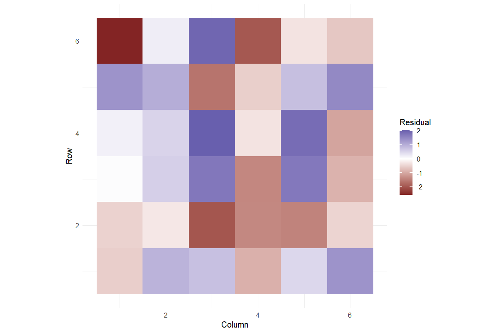
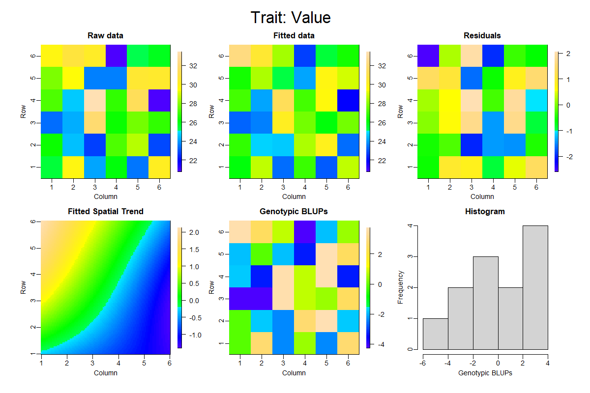
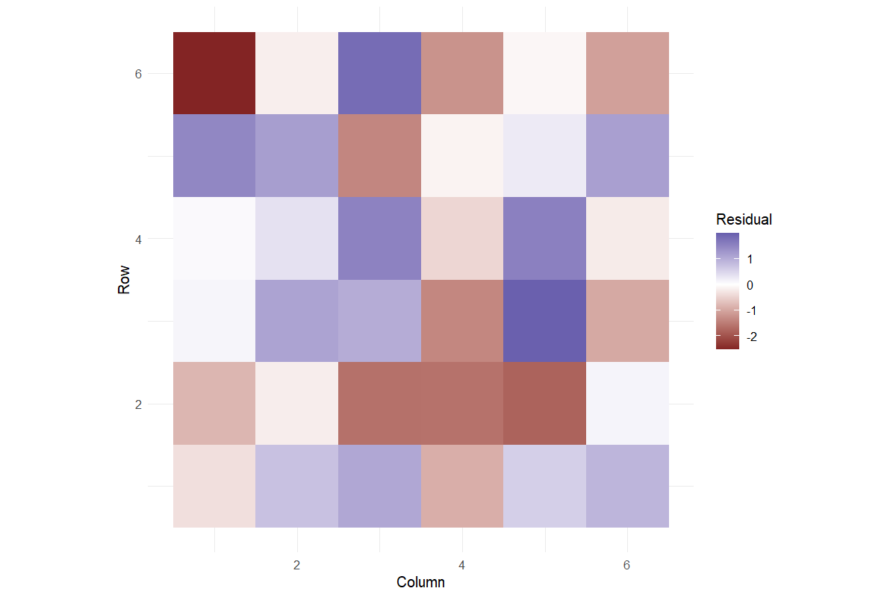
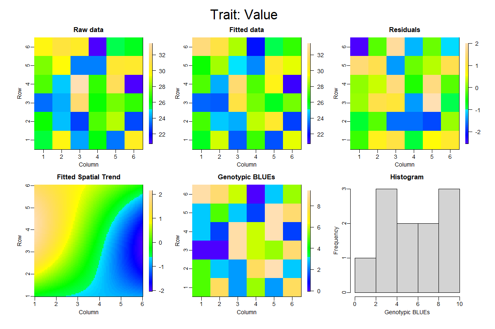

Worked analysis · 2 executable examples
Spatial Field Analysis
Model spatial variation using observed field coordinates
Question and data
Map genotype, replication, numeric row, numeric column and response. Coordinates must identify unique plots, with at least four distinct rows and columns.
Read and report the results
SpATS fits a PSANOVA surface with fixed replication and fixed or random genotype. Report the specification and genotype estimates with their model-provided SEs. Inspect the field map, fitted surface and residual map together.
Run the examples
From the repository root, restore the locked dependencies and load the app functions. These are source-checkout examples, not an installed package API.
source("tools/example-cases.R")
load_drdesign()In Shiny, select this module from its workflow heading, upload the example CSV, map the columns, review observations and run. Each R example states the analysis options to reproduce.
spatial-random
Synthetic teaching data; not evidence from a field experiment.
Input
| Source / term | Genotype | Rep | Row | Column | Value |
|---|---|---|---|---|---|
| 7 | G07 | R1 | 1 | 1 | 25.436 |
| 22 | G10 | R2 | 1 | 2 | 29.657 |
| 3 | G03 | R1 | 1 | 3 | 24.157 |
| 30 | G06 | R3 | 1 | 4 | 25.970 |
| 15 | G03 | R2 | 1 | 5 | 23.515 |
| 34 | G10 | R3 | 1 | 6 | 30.067 |
| 19 | G07 | R2 | 2 | 1 | 26.243 |
| 4 | G04 | R1 | 2 | 2 | 24.446 |
Showing up to 8 of 36 observations. The CSV contains every row.
Analysis
data <- research_example("spatial-field")
result <- run_spatial_trial(data,genotype_random=TRUE)Computed output
Genotype predictions 12 rows
| Source / term | Genotype | Column | Row | Rep | predicted.values | standard.errors |
|---|---|---|---|---|---|---|
| 1 | G01 | Excluded | Excluded | Averaged | 22.518 | 0.959 |
| 14 | G02 | Excluded | Excluded | Averaged | 23.374 | 0.932 |
| 3 | G03 | Excluded | Excluded | Averaged | 24.379 | 1.013 |
| 4 | G04 | Excluded | Excluded | Averaged | 24.946 | 0.938 |
| 17 | G05 | Excluded | Excluded | Averaged | 24.841 | 0.989 |
| 30 | G06 | Excluded | Excluded | Averaged | 27.186 | 0.961 |
| 7 | G07 | Excluded | Excluded | Averaged | 26.564 | 1.050 |
| 32 | G08 | Excluded | Excluded | Averaged | 27.472 | 0.929 |
| 21 | G09 | Excluded | Excluded | Averaged | 29.243 | 0.984 |
| 22 | G10 | Excluded | Excluded | Averaged | 29.455 | 1.019 |
| 35 | G11 | Excluded | Excluded | Averaged | 30.433 | 0.955 |
| 12 | G12 | Excluded | Excluded | Averaged | 30.370 | 0.970 |
Residual diagnostics 36 rows
| Source / term | Observation | Row | Column | Fitted | Residual | Nonspatial Residual |
|---|---|---|---|---|---|---|
| 7 | 1 | 1 | 1 | 25.989 | -0.554 | -1.197 |
| 22 | 2 | 1 | 2 | 28.732 | 0.924 | 1.145 |
| 3 | 3 | 1 | 3 | 23.392 | 0.765 | 0.635 |
| 30 | 4 | 1 | 4 | 26.873 | -0.903 | -1.030 |
| 15 | 5 | 1 | 5 | 23.037 | 0.478 | -0.235 |
| 34 | 6 | 1 | 6 | 28.730 | 1.337 | 0.920 |
| 19 | 7 | 2 | 1 | 26.749 | -0.506 | -0.618 |
| 4 | 8 | 2 | 2 | 24.711 | -0.265 | -0.273 |
| 27 | 9 | 2 | 3 | 24.661 | -1.998 | -1.722 |
| 10 | 10 | 2 | 4 | 28.495 | -1.388 | -1.176 |
| 35 | 11 | 2 | 5 | 29.990 | -1.440 | -1.643 |
| 16 | 12 | 2 | 6 | 23.317 | -0.483 | -2.112 |
| 1 | 13 | 3 | 1 | 23.250 | 0.041 | 0.350 |
| 25 | 14 | 3 | 2 | 23.650 | 0.578 | 0.424 |
| 12 | 15 | 3 | 3 | 30.143 | 1.706 | 1.237 |
| 32 | 16 | 3 | 4 | 27.644 | -1.393 | -1.843 |
| 6 | 17 | 3 | 5 | 25.999 | 1.688 | 1.550 |
| 21 | 18 | 3 | 6 | 27.633 | -0.880 | -2.048 |
| 28 | 19 | 4 | 1 | 27.025 | 0.175 | 1.618 |
| 14 | 20 | 4 | 2 | 24.089 | 0.524 | 1.246 |
| 36 | 21 | 4 | 3 | 31.365 | 2.034 | 1.924 |
| 8 | 22 | 4 | 4 | 27.044 | -0.313 | -0.501 |
| 23 | 23 | 4 | 5 | 29.520 | 1.851 | 1.814 |
| 2 | 24 | 4 | 6 | 21.862 | -1.050 | -2.326 |
| 17 | 25 | 5 | 1 | 26.438 | 1.334 | 2.244 |
| 31 | 26 | 5 | 2 | 28.429 | 1.006 | 1.938 |
| 5 | 27 | 5 | 3 | 25.273 | -1.623 | -1.650 |
| 26 | 28 | 5 | 4 | 24.132 | -0.551 | -0.420 |
| 11 | 29 | 5 | 5 | 29.757 | 0.776 | 1.203 |
| 33 | 30 | 5 | 6 | 28.893 | 1.469 | 0.925 |
| 24 | 31 | 6 | 1 | 32.223 | -2.573 | -1.190 |
| 9 | 32 | 6 | 2 | 30.506 | 0.216 | 2.148 |
| 20 | 33 | 6 | 3 | 28.260 | 1.943 | 2.744 |
| 13 | 34 | 6 | 4 | 22.774 | -1.971 | -2.366 |
| 29 | 35 | 6 | 5 | 25.388 | -0.317 | -1.091 |
| 18 | 36 | 6 | 6 | 26.379 | -0.640 | -0.626 |
Variance components 6 rows
| Component | Variance |
|---|---|
| Genotype | 8.480 |
| f(Column) | 1.04e-38 |
| f(Row) | 0.006 |
| f(Column):Row | 2.20e-15 |
| Column:f(Row) | 8.749 |
| f(Column):f(Row) | 2.22e-12 |
Reviewed data 36 rows
| Source / term | Genotype | Rep | Row | Column | Value |
|---|---|---|---|---|---|
| 7 | G07 | R1 | 1 | 1 | 25.436 |
| 22 | G10 | R2 | 1 | 2 | 29.657 |
| 3 | G03 | R1 | 1 | 3 | 24.157 |
| 30 | G06 | R3 | 1 | 4 | 25.970 |
| 15 | G03 | R2 | 1 | 5 | 23.515 |
| 34 | G10 | R3 | 1 | 6 | 30.067 |
| 19 | G07 | R2 | 2 | 1 | 26.243 |
| 4 | G04 | R1 | 2 | 2 | 24.446 |
| 27 | G03 | R3 | 2 | 3 | 22.664 |
| 10 | G10 | R1 | 2 | 4 | 27.108 |
| 35 | G11 | R3 | 2 | 5 | 28.550 |
| 16 | G04 | R2 | 2 | 6 | 22.834 |
| 1 | G01 | R1 | 3 | 1 | 23.291 |
| 25 | G01 | R3 | 3 | 2 | 24.228 |
| 12 | G12 | R1 | 3 | 3 | 31.849 |
| 32 | G08 | R3 | 3 | 4 | 26.252 |
| 6 | G06 | R1 | 3 | 5 | 27.687 |
| 21 | G09 | R2 | 3 | 6 | 26.754 |
| 28 | G04 | R3 | 4 | 1 | 27.200 |
| 14 | G02 | R2 | 4 | 2 | 24.612 |
| 36 | G12 | R3 | 4 | 3 | 33.399 |
| 8 | G08 | R1 | 4 | 4 | 26.731 |
| 23 | G11 | R2 | 4 | 5 | 31.371 |
| 2 | G02 | R1 | 4 | 6 | 20.813 |
| 17 | G05 | R2 | 5 | 1 | 27.771 |
| 31 | G07 | R3 | 5 | 2 | 29.435 |
| 5 | G05 | R1 | 5 | 3 | 23.649 |
| 26 | G02 | R3 | 5 | 4 | 23.581 |
| 11 | G11 | R1 | 5 | 5 | 30.533 |
| 33 | G09 | R3 | 5 | 6 | 30.362 |
| 24 | G12 | R2 | 6 | 1 | 29.649 |
| 9 | G09 | R1 | 6 | 2 | 30.722 |
| 20 | G08 | R2 | 6 | 3 | 30.204 |
| 13 | G01 | R2 | 6 | 4 | 20.803 |
| 29 | G05 | R3 | 6 | 5 | 25.071 |
| 18 | G06 | R2 | 6 | 6 | 25.739 |
Software versions 8 rows
| Source / term | Package | Version |
|---|---|---|
| R | 4.5.3 | |
| shiny | shiny | 1.13.0 |
| agricolae | agricolae | 1.3.7 |
| metan | metan | 1.19.0 |
| lme4 | lme4 | 2.0.1 |
| emmeans | emmeans | 2.0.2 |
| SpATS | SpATS | 1.0.20 |
| DiallelAnalysisR | DiallelAnalysisR | 0.6.0 |
Analysis settings 4 rows
| Setting | Value |
|---|---|
| Genotype | Random |
| Replication | Fixed |
| Spatial | PSANOVA(Column, Row), 3 x 3 segments |
| Alpha | 0.05 |


spatial-fixed
Synthetic teaching data; not evidence from a field experiment.
Input
| Source / term | Genotype | Rep | Row | Column | Value |
|---|---|---|---|---|---|
| 7 | G07 | R1 | 1 | 1 | 25.436 |
| 22 | G10 | R2 | 1 | 2 | 29.657 |
| 3 | G03 | R1 | 1 | 3 | 24.157 |
| 30 | G06 | R3 | 1 | 4 | 25.970 |
| 15 | G03 | R2 | 1 | 5 | 23.515 |
| 34 | G10 | R3 | 1 | 6 | 30.067 |
| 19 | G07 | R2 | 2 | 1 | 26.243 |
| 4 | G04 | R1 | 2 | 2 | 24.446 |
Showing up to 8 of 36 observations. The CSV contains every row.
Analysis
data <- research_example("spatial-field")
result <- run_spatial_trial(data,genotype_random=FALSE)Computed output
Genotype predictions 12 rows
| Source / term | Genotype | Column | Row | Rep | predicted.values | standard.errors |
|---|---|---|---|---|---|---|
| 1 | G01 | Excluded | Excluded | Averaged | 21.677 | 1.010 |
| 14 | G02 | Excluded | Excluded | Averaged | 23.131 | 0.956 |
| 3 | G03 | Excluded | Excluded | Averaged | 24.025 | 1.063 |
| 4 | G04 | Excluded | Excluded | Averaged | 24.560 | 0.971 |
| 17 | G05 | Excluded | Excluded | Averaged | 24.514 | 1.030 |
| 30 | G06 | Excluded | Excluded | Averaged | 27.213 | 0.999 |
| 7 | G07 | Excluded | Excluded | Averaged | 26.420 | 1.103 |
| 32 | G08 | Excluded | Excluded | Averaged | 27.682 | 0.954 |
| 21 | G09 | Excluded | Excluded | Averaged | 29.937 | 1.050 |
| 22 | G10 | Excluded | Excluded | Averaged | 29.667 | 1.064 |
| 35 | G11 | Excluded | Excluded | Averaged | 31.066 | 0.986 |
| 12 | G12 | Excluded | Excluded | Averaged | 30.867 | 1.003 |
Residual diagnostics 36 rows
| Source / term | Observation | Row | Column | Fitted | Residual | Nonspatial Residual |
|---|---|---|---|---|---|---|
| 7 | 1 | 1 | 1 | 25.786 | -0.350 | -1.238 |
| 22 | 2 | 1 | 2 | 28.920 | 0.736 | 0.849 |
| 3 | 3 | 1 | 3 | 23.098 | 1.058 | 1.075 |
| 30 | 4 | 1 | 4 | 26.879 | -0.908 | -0.995 |
| 15 | 5 | 1 | 5 | 22.944 | 0.571 | 0.206 |
| 34 | 6 | 1 | 6 | 29.182 | 0.885 | 0.624 |
| 19 | 7 | 2 | 1 | 27.070 | -0.827 | -0.659 |
| 4 | 8 | 2 | 2 | 24.640 | -0.194 | -0.017 |
| 27 | 9 | 2 | 3 | 24.293 | -1.629 | -1.281 |
| 10 | 10 | 2 | 4 | 28.729 | -1.621 | -1.473 |
| 35 | 11 | 2 | 5 | 30.348 | -1.798 | -2.101 |
| 16 | 12 | 2 | 6 | 22.706 | 0.128 | -1.856 |
| 1 | 13 | 3 | 1 | 23.171 | 0.121 | 0.881 |
| 25 | 14 | 3 | 2 | 23.118 | 1.110 | 0.955 |
| 12 | 15 | 3 | 3 | 30.849 | 0.999 | 0.580 |
| 32 | 16 | 3 | 4 | 27.620 | -1.368 | -1.977 |
| 6 | 17 | 3 | 5 | 25.702 | 1.985 | 1.585 |
| 21 | 18 | 3 | 6 | 27.730 | -0.976 | -2.390 |
| 28 | 19 | 4 | 1 | 27.134 | 0.066 | 1.874 |
| 14 | 20 | 4 | 2 | 24.259 | 0.354 | 1.746 |
| 36 | 21 | 4 | 3 | 31.870 | 1.529 | 1.267 |
| 8 | 22 | 4 | 4 | 27.187 | -0.456 | -0.634 |
| 23 | 23 | 4 | 5 | 29.816 | 1.555 | 1.356 |
| 2 | 24 | 4 | 6 | 21.036 | -0.224 | -1.826 |
| 17 | 25 | 5 | 1 | 26.300 | 1.471 | 2.410 |
| 31 | 26 | 5 | 2 | 28.258 | 1.177 | 1.897 |
| 5 | 27 | 5 | 3 | 25.026 | -1.377 | -1.485 |
| 26 | 28 | 5 | 4 | 23.711 | -0.130 | 0.079 |
| 11 | 29 | 5 | 5 | 30.290 | 0.243 | 0.745 |
| 33 | 30 | 5 | 6 | 29.201 | 1.161 | 0.583 |
| 24 | 31 | 6 | 1 | 32.178 | -2.528 | -1.847 |
| 9 | 32 | 6 | 2 | 30.907 | -0.185 | 1.806 |
| 20 | 33 | 6 | 3 | 28.379 | 1.824 | 2.611 |
| 13 | 34 | 6 | 4 | 22.034 | -1.231 | -1.835 |
| 29 | 35 | 6 | 5 | 25.165 | -0.094 | -0.925 |
| 18 | 36 | 6 | 6 | 26.815 | -1.076 | -0.591 |
Variance components 5 rows
| Component | Variance |
|---|---|
| f(Column) | 8.97e-78 |
| f(Row) | 0.050 |
| f(Column):Row | 1.698 |
| Column:f(Row) | 44.635 |
| f(Column):f(Row) | 1.41e-27 |
Reviewed data 36 rows
| Source / term | Genotype | Rep | Row | Column | Value |
|---|---|---|---|---|---|
| 7 | G07 | R1 | 1 | 1 | 25.436 |
| 22 | G10 | R2 | 1 | 2 | 29.657 |
| 3 | G03 | R1 | 1 | 3 | 24.157 |
| 30 | G06 | R3 | 1 | 4 | 25.970 |
| 15 | G03 | R2 | 1 | 5 | 23.515 |
| 34 | G10 | R3 | 1 | 6 | 30.067 |
| 19 | G07 | R2 | 2 | 1 | 26.243 |
| 4 | G04 | R1 | 2 | 2 | 24.446 |
| 27 | G03 | R3 | 2 | 3 | 22.664 |
| 10 | G10 | R1 | 2 | 4 | 27.108 |
| 35 | G11 | R3 | 2 | 5 | 28.550 |
| 16 | G04 | R2 | 2 | 6 | 22.834 |
| 1 | G01 | R1 | 3 | 1 | 23.291 |
| 25 | G01 | R3 | 3 | 2 | 24.228 |
| 12 | G12 | R1 | 3 | 3 | 31.849 |
| 32 | G08 | R3 | 3 | 4 | 26.252 |
| 6 | G06 | R1 | 3 | 5 | 27.687 |
| 21 | G09 | R2 | 3 | 6 | 26.754 |
| 28 | G04 | R3 | 4 | 1 | 27.200 |
| 14 | G02 | R2 | 4 | 2 | 24.612 |
| 36 | G12 | R3 | 4 | 3 | 33.399 |
| 8 | G08 | R1 | 4 | 4 | 26.731 |
| 23 | G11 | R2 | 4 | 5 | 31.371 |
| 2 | G02 | R1 | 4 | 6 | 20.813 |
| 17 | G05 | R2 | 5 | 1 | 27.771 |
| 31 | G07 | R3 | 5 | 2 | 29.435 |
| 5 | G05 | R1 | 5 | 3 | 23.649 |
| 26 | G02 | R3 | 5 | 4 | 23.581 |
| 11 | G11 | R1 | 5 | 5 | 30.533 |
| 33 | G09 | R3 | 5 | 6 | 30.362 |
| 24 | G12 | R2 | 6 | 1 | 29.649 |
| 9 | G09 | R1 | 6 | 2 | 30.722 |
| 20 | G08 | R2 | 6 | 3 | 30.204 |
| 13 | G01 | R2 | 6 | 4 | 20.803 |
| 29 | G05 | R3 | 6 | 5 | 25.071 |
| 18 | G06 | R2 | 6 | 6 | 25.739 |
Software versions 8 rows
| Source / term | Package | Version |
|---|---|---|
| R | 4.5.3 | |
| shiny | shiny | 1.13.0 |
| agricolae | agricolae | 1.3.7 |
| metan | metan | 1.19.0 |
| lme4 | lme4 | 2.0.1 |
| emmeans | emmeans | 2.0.2 |
| SpATS | SpATS | 1.0.20 |
| DiallelAnalysisR | DiallelAnalysisR | 0.6.0 |
Analysis settings 4 rows
| Setting | Value |
|---|---|
| Genotype | Fixed |
| Replication | Fixed |
| Spatial | PSANOVA(Column, Row), 3 x 3 segments |
| Alpha | 0.05 |


Reporting conventions
Tables: estimates and standard errors to 3 decimals; p-values below 0.001 shown as <0.001. Very small or large values use scientific notation. NA means unavailable or not applicable. CSV files retain numerical precision. Confidence levels and multiplicity corrections follow the stated analysis settings; shared letters indicate non-rejection, not equivalence.